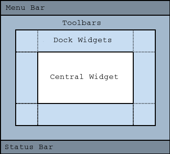
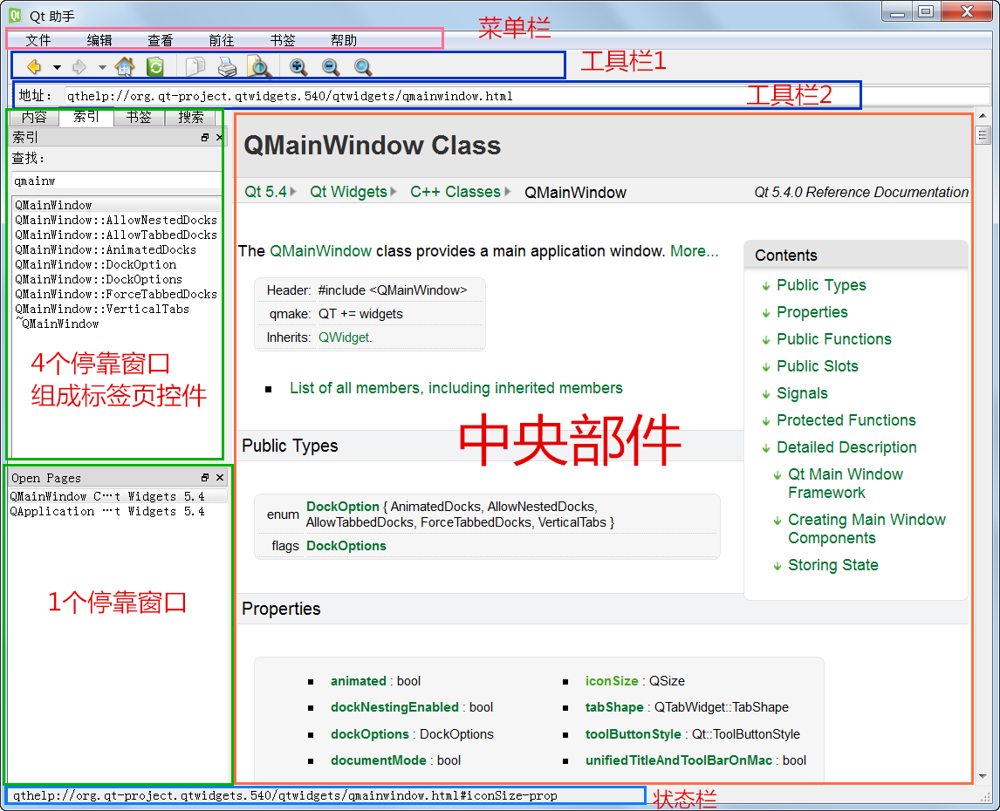
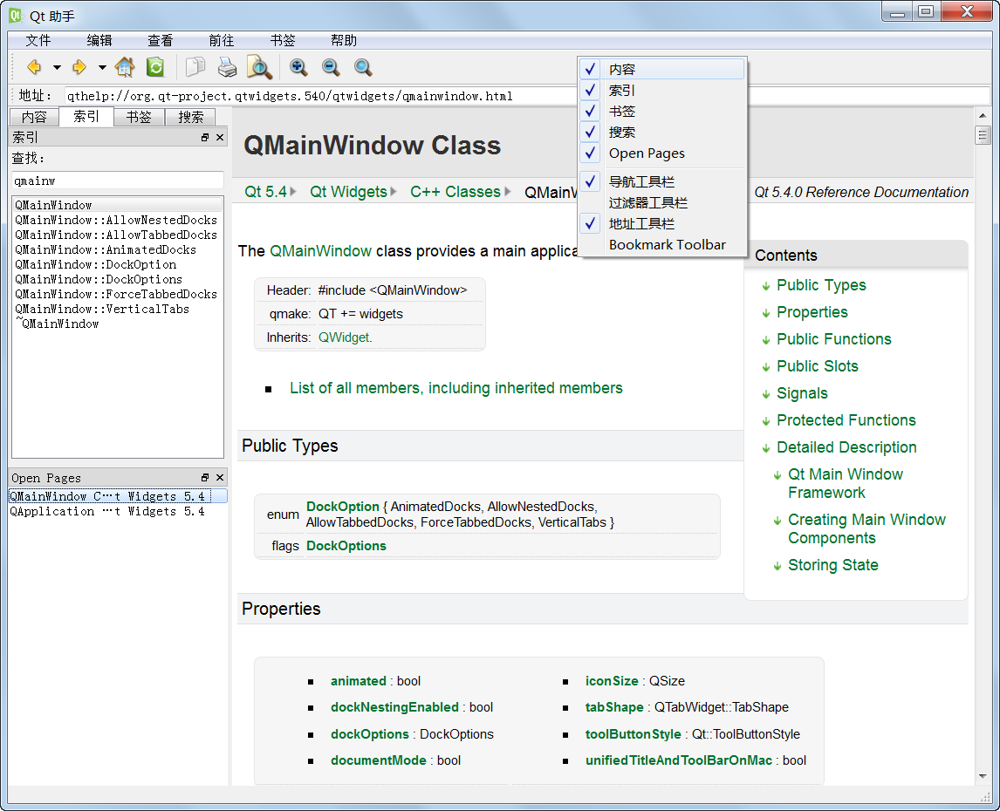
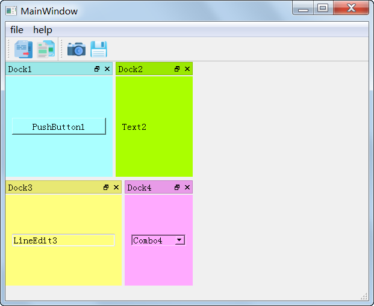
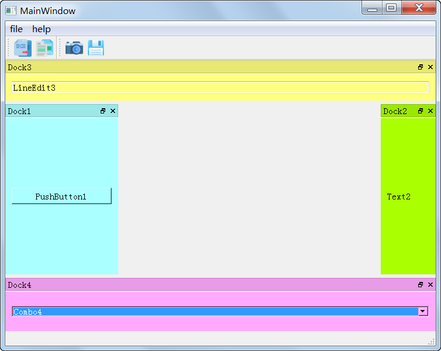
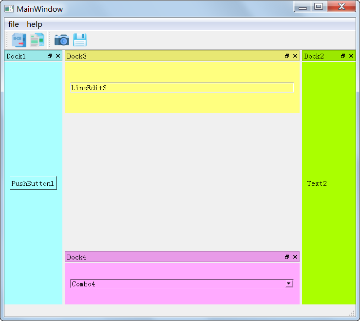
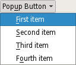
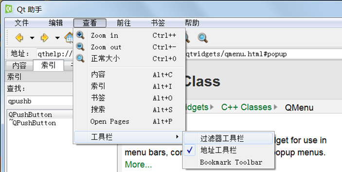
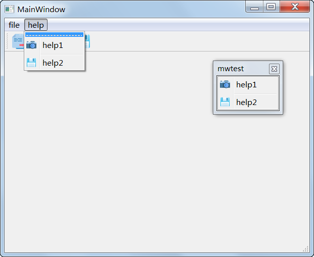

12.1 主窗口和菜单栏
本节介绍 QMainWindow 主窗口类，以及动作 QAction、菜单 QMenu、菜单栏 QMenuBar。一般由多个菜单项动作 QAction
组成一个菜单 QMenu，多个 菜单 QMenu 添加到
QMenuBar，就形成常见的菜单栏完整功能。本节新建一个基于主窗口类看图软件示例，并在后续小节逐步添加组件功能。
12.1.1 主窗口 QMainWindow
主窗口程序是最常见的软件界面，例如 QtCreator、Assistant、Designer，常见的办公软件、画图软件、文本编辑器等等，几乎都属于主窗口
程序。典型的主窗口程序组成如下图所示：

主窗口顶部是菜单栏 Menu Bar，菜单栏最多一个，菜单栏里面可以有多个并排的菜单；
菜单栏下面一般是工具栏 Toolbars，工具栏可以有多个，也可以排多行，可以停靠在四周方位，如果工具栏很多，可以排布一圈；
然后是停靠窗口，停靠窗口也可以有多个，可以停靠在四周，就是第二圈范围，停靠窗口也可以脱离停靠区域，悬浮在主窗口上面，悬浮的停靠窗口可以自由移动位置；
正中间的是中央部件，主窗口程序必须有中央部件，并且是唯一的。QMainWindow 默认是一个程序打开一个文档，就是 SDI
单文档程序（Single Document Interface），如果希望支持一个程序内同时打开多个文档，即 MDI 多文档程序（Multiple
Document Interface），需要将中央部件设置为 QMdiArea 对象。多文档程序下一章介绍，本章只介绍单文档程序。
主窗口最底部的是状态栏，一般显示关于文档或操作的临时状态信息。
以 Qt Assistant 为例：

Qt Assistant 第一行是菜单栏。
第二行是工具栏 1，第三行是工具栏 2。
左侧上半部分是 4 个停靠窗口组成的标签页控件，左侧下半部分是 1
个停靠窗口，停靠窗口可以并列排布，也可以内嵌组合成标签页控件，还可以悬浮，不依附主窗口停靠区，非常灵活。
中央部件占据最大区域，一般用于显示文档。
最底部是状态栏，显示状态信息，比如上图就是显示链接信息。
下面我们分块介绍 QMainWindow 的功能函数。
（1）构造函数
QMainWindow(QWidget * parent = 0,
Qt::WindowFlags flags = 0)
~QMainWindow()
构造函数第一个参数 parent 是父窗口，一般都是 0，代表是顶级窗口；flags 是窗口标志位，一般用默认的 0 即可。
（2）菜单栏函数
主窗口最多只有一个菜单栏，一般获取和设置菜单栏的函数如下：
QMenuBar * menuBar() const
void setMenuBar(QMenuBar * menuBar)
QMenuBar 类下面小节介绍，如果没有构造菜单栏，menuBar() 会创建一个新的菜单栏并返回。
setMenuBar() 将参数里的菜单栏设置给主窗口，该菜单栏归属于主窗口，并且由主窗口在合适的时候销毁（如程序结束时）。
如果希望定制自己的菜单栏，那么可以用下面函数设置定制的菜单栏控件：
QWidget * menuWidget() const
void setMenuWidget(QWidget * menuBar)
menuWidget() 默认和 menuBar() 是一样的，只有定制特殊菜单栏控件时，才会用到 menuWidget() 和
setMenuWidget() 函数。
主窗口程序默认拥有一个特殊的右键菜单，由主窗口程序自动生成，右键菜单生成函数如下：
virtual QMenu * createPopupMenu()
这是个虚函数，QMainWindow 拥有工具栏、停靠窗口时，QMainWindow
自动创建该右键菜单，可以选择显示或隐藏工具栏和停靠窗口，例如右键点击菜单栏、工具栏区域或者停靠窗口标题栏，显示如下右键菜单：

上图右键菜单中，内容、索引、书签、搜索、Open Pages 是 5 个停靠窗口，
导航工具栏、过滤器工具栏、地址工具栏、Bookmark Toolbar 是 4 个工具栏，
菜单项前面的勾选号就是显示该停靠窗口、工具栏，不勾选就是隐藏。
如果希望针对该右键菜单进行定制，可以重载 createPopupMenu()，新建自己的定制菜单，新建菜单对象的归属权会传递给该函数的调用者。
一般用 QMainWindow::createPopupMenu() 默认的右键菜单即可，createPopupMenu()
每次调用都会创建新的菜单对象，但是多次创建的菜单对象中，关于工具栏、停靠窗口的隐藏或显示的菜单项是共用的，相当于多次创建的菜单中菜单项是自动同步的，这样在
不同位置右击显示右键菜单，都能正确显示工具栏、停靠窗口的隐藏或显示状态。
（3）工具栏函数
主窗口可以有多个工具栏，添加工具栏的函数如下：
void addToolBar(Qt::ToolBarArea area,
QToolBar * toolbar)
void addToolBar(QToolBar * toolbar)
QToolBar * addToolBar(const QString & title)
void insertToolBar(QToolBar * before, QToolBar *
toolbar)
第一个添加函数，是在指定工具栏停靠区域，添加一个工具栏 toolbar。
第二个添加函数，等同于 addToolBar(Qt::TopToolBarArea, toolbar)，就是在顶部停靠区域添加工具栏。
第三个添加函数，创建一个标题为 title 新的工具栏，添加到顶部停靠区域，返回值就是新的工具栏对象指针。
第四个插入工具栏函数，就是在 before 工具栏前面插入新工具栏 toolbar。
工具栏停靠区域主要有如下几种：
| 枚举常量 |
数值 |
描述 |
| Qt::LeftToolBarArea |
0x1 |
左侧工具栏区域 |
| Qt::RightToolBarArea |
0x2 |
右侧工具栏区域 |
| Qt::TopToolBarArea |
0x4 |
顶部工具栏区域 |
| Qt::BottomToolBarArea |
0x8 |
底部工具栏区域 |
| Qt::AllToolBarAreas |
ToolBarArea_Mask |
所有区域模板，用于位或 | 、位与 &操作 |
| Qt::NoToolBarArea |
0 |
没有工具栏区域 |
添加的多个工具栏默认都在同一行显示，如果希望换行显示，那么可以插入换行符：
void addToolBarBreak(Qt::ToolBarArea
area = Qt::TopToolBarArea)
void insertToolBarBreak(QToolBar * before)
addToolBarBreak() 是在指定区域 area 现有工具栏末尾添加换行符，添加下一个新工具栏时，就会从下一个新行开始排布。
insertToolBarBreak() 是在 before 工具栏前面加换行符，这样 before 工具栏就会排布在新的行首。
移除工具栏的函数如下：
void removeToolBar(QToolBar * toolbar)
removeToolBar() 根据参数指针 toolbar 从主窗口移除该工具栏，但是注意 toolbar 对象并没有彻底从内存删除，要注意手动
delete toolbar 对象。
删除工具栏换行符函数如下：
void removeToolBarBreak(QToolBar *
before)
removeToolBarBreak() 删除指定工具栏 before 前面的换行符，这样原本以 before
开始的一行工具栏会显示到上面一行工具栏的末尾。
获取工具栏当前停靠位置，使用下面函数：
Qt::ToolBarArea toolBarArea(QToolBar *
toolbar) const
toolBarArea() 返回值与 Qt::ToolBarArea 枚举常量做比较，或者计算位与值，可以判断工具栏位置，如果工具栏目前没有添加给主窗
口，那 么返回值是 Qt::NoToolBarArea。
判断工具栏前面是否有换行符，可以用下面函数：
bool toolBarBreak(QToolBar * toolbar)
const
toolbar 前面紧挨着换行符，就返回 true，否则返回 false。
工具栏有多个工具按钮，可以定制工具按钮显示风格，如下函数：
void
setToolButtonStyle(Qt::ToolButtonStyle toolButtonStyle)
//设置工具按钮风格
Qt::ToolButtonStyle toolButtonStyle() const
//获取工具按钮风格
工具栏按钮风格枚举值如下表所示：
| 枚举常量 |
数值 |
描述 |
| Qt::ToolButtonIconOnly |
0 |
工具栏按钮只显示图标 |
| Qt::ToolButtonTextOnly |
1 |
工具栏按钮只显示文本 |
| Qt::ToolButtonTextBesideIcon |
2 |
工具栏按钮文本显示在图标旁边（右侧） |
| Qt::ToolButtonTextUnderIcon |
3 |
工具栏按钮文本显示在图标下面 |
| Qt::ToolButtonFollowStyle |
4 |
工具栏按钮根据窗口 style() 的风格显示 |
工具栏按钮默认风格是 Qt::ToolButtonIconOnly，只显示图标。
工具栏按钮图标的尺寸大小可以设置，如下函数：
void setIconSize(const QSize &
iconSize) //设置图标尺寸
QSize iconSize() const //获取图标尺寸
对于 Mac OS X 系统，可以设置显示统一标题和工具栏显示风格：
void setUnifiedTitleAndToolBarOnMac(bool
set)
bool unifiedTitleAndToolBarOnMac() const
对于其他操作系统，可以忽略这个 unifiedTitleAndToolBarOnMac 特性。
（4）状态栏函数
主窗口底部可以设置一个状态栏，显示文档或操作的状态信息：
void setStatusBar(QStatusBar *
statusbar)
QStatusBar * statusBar() const
setStatusBar() 参数里如果为 0，就是空指针，那么主窗口会删除状态栏，如果设置了正常的
statusbar，那么状态栏对象的归属权会传递给主窗口，状态栏对象由主窗口管理，主窗口会在合适的时候自动销毁状态栏。
如果没有设置状态栏，statusBar() 返回空值，如果有状态栏，返回正常的状态栏对象指针。
（5）停靠窗口函数
主窗口可以拥有多个停靠窗口，使用下面函数添加停靠窗口：
void addDockWidget(Qt::DockWidgetArea
area, QDockWidget * dockwidget)
void addDockWidget(Qt::DockWidgetArea area, QDockWidget
* dockwidget, Qt::Orientation orientation)
参数 area是停靠窗口初始停靠的位置，dockwidget 是预先创建的停靠窗口，orientation 是停靠窗口的排布方向。orientation
只有两个数值，Qt::Horizontal 是水平排布（0x1），Qt::Vertical 垂直排布（0x2）。
Qt::DockWidgetArea 枚举数值如下：
| 枚举常量 |
数值 |
描述 |
| Qt::LeftDockWidgetArea |
0x1 |
左侧停靠区域 |
| Qt::RightDockWidgetArea |
0x2 |
右侧停靠区域 |
| Qt::TopDockWidgetArea |
0x4 |
顶部停靠区域（上方停靠区域） |
| Qt::BottomDockWidgetArea |
0x8 |
底部停靠区域（下方停靠区域） |
| Qt::AllDockWidgetAreas |
DockWidgetArea_Mask |
四个区域位或，全都有 |
| Qt::NoDockWidgetArea |
0 |
没有停靠区域 |
可以根据显示需要和美观，指定停靠窗口的初始停靠位置，后续用户可以自己拖动停靠窗口的位置。
获取停靠窗口当前停靠位置，使用下面函数：
Qt::DockWidgetArea
dockWidgetArea(QDockWidget * dockwidget) const
如果停靠窗口还没有添加给主窗口，那么返回 Qt::NoDockWidgetArea；如果停靠窗口从停靠状态拖动变为悬浮状态，那么
dockWidgetArea() 返回之前停靠位置的数值，双击悬浮的停靠窗口标题栏，会自动停靠到原来的停靠位置。
将停靠窗口从主窗口移除的函数如下：
void removeDockWidget(QDockWidget *
dockwidget)
dockwidget 从主窗口移除后，还存在内存空间，如果要彻底删除，需要手动 delete dockwidget 对象。
停靠窗口可以设置多种停靠选项，如下函数：
void setDockOptions(DockOptions options)
DockOptions dockOptions() const
默认停靠选项为 AnimatedDocks | AllowTabbedDocks，显示平滑动画、允许多个停靠窗口组合为标签页控件。
详细的停靠选项如下表所示：
| 枚举常量 |
数值 |
描述 |
| QMainWindow::AnimatedDocks |
0x01 |
用于设置停靠平滑动画 animated 属性 |
| QMainWindow::AllowNestedDocks |
0x02 |
用于设置复杂的嵌套停靠（蜂巢式停靠）dockNestingEnabled 属性 |
| QMainWindow::AllowTabbedDocks |
0x04 |
允许标签页式停靠，用户将一个停靠窗口拖动放置到另一个停靠窗口正上方，这时多个停靠窗口堆叠自动组合成一个标签页控件 |
| QMainWindow::ForceTabbedDocks |
0x08 |
强制标签页式停靠，每个停靠区强制只有一个标签页控件显示停靠窗口，这样同一区域不会并排显示停靠窗口。如果设置了
ForceTabbedDocks 选项，那么 AllowNestedDocks 选项就会无效 |
| QMainWindow::VerticalTabs |
0x10 |
多个停靠窗口组合的标签页控件的标签栏垂直显示，就是主窗口左右两侧的标签页控件的标签栏垂直显示，对于顶部和底部的标签页控件没有影响。
不设置该选项时，标签栏默认显示在底部 |
注意大部分选项要在停靠窗口添加给主窗口之前设置，后续添加停靠窗口，效果才能生效。
只有 AnimatedDocks 和 VerticalTabs 可以随时设置都生效，其他的选项应当在添加停靠窗口之前设置。
对于不冲突的选项，用位或 | 运算符可以同时启用多个选项效果。
animated 平滑动画属性对应函数如下：
bool isAnimated() const
void setAnimated(bool enabled)
这个属性控制停靠窗口和工具栏时是否显示平滑动画效果，例如当用户将一个停靠窗口拖动到另一个停靠窗口正上面，动画显示标签页式组合停靠；如果将一个停靠窗口拖动
到另一个停靠窗口下方位置或右侧位置，那么显示并排放置的动画。setAnimated() 控制拖动的动画效果是否平滑，如果设置为
fasle，拖动动画会显得 比较急促生硬。
dockNestingEnabled 嵌套停靠属性（或叫蜂巢式停靠）对应函数如下：
bool isDockNestingEnabled() const
void setDockNestingEnabled(bool enabled)
dockNestingEnabled 如果为
fasle，那么每个停靠区只能显示一列（左右停靠区域）或一行（上下停靠区域）停靠窗口，并列显示的停靠窗口是一维排布的；而当
dockNestingEnabled 为 true 时，同一个停靠区域可以二维切分并排停靠，像蜂巢式的排布，如下图所示：

通常情况下都不使用嵌套停靠（或叫蜂巢式停靠），一般一个停靠区域只用一维停靠排列。
只有特别复杂的主窗口程序，停靠窗口太多时，才会启用蜂巢式停靠。
注意 dockNestingEnabled 为 true（即设置 QMainWindow::AllowNestedDocks
选项），与QMainWindow::ForceTabbedDocks 选项是冲突的，并且 QMainWindow::ForceTabbedDocks
选项是优先的，优先使用强制标签页式停靠。
使用 animated 、dockNestingEnabled 属性函数和设置停靠选项函数都能实现同样的效果，有属性设置函数的优先推荐属性设置函数，这样
代码意思看着更清晰。
除了用户拖动控制停靠窗口排布，也可以用函数控制：
void splitDockWidget(QDockWidget *
first, QDockWidget * second, Qt::Orientation orientation)
splitDockWidget() 函数将第一个窗口 first 的占用区域切分成并排的两块区域，用来放置 first 和 second
两个停靠窗口，orientation 是切分方向，Qt::Horizontal 是水平切分，第二个窗口在第一个窗口右侧， Qt::Vertical
是垂直切分，第二个窗口在第一个窗口下方。注意如果 first
窗口已经位于标签页控件内容，那么该函数将第二个窗口添加到标签页控件里面，而不是切分区域。另外 Qt::LayoutDirection
会影响第一个和第二个窗口的先后顺序，QApplication::setLayoutDirection()
、QWidget::setLayoutDirection() 函数影响切分窗口的先后顺序，一般都用不到这两个布局方向函数。
控制多个停靠窗口组合成标签页控件，用下面函数：
void tabifyDockWidget(QDockWidget *
first, QDockWidget * second)
该函数就是将两个停靠窗口组合成一个标签页控件来停靠显示，后续可以重复调用该函数加入第三个、第四个停靠窗口到一起，组合成标签页控件。
如果希望获取停靠窗口所在标签页控件的组合在一起的友邻停靠窗口，使用下面函数：
QList<QDockWidget *>
tabifiedDockWidgets(QDockWidget * dockwidget) const
返回的列表是与 dockwidget 同一个标签页控件里的友邻窗口列表，不包括 dockwidget 自己；如果 dockwidget 不在标签页控件
里，返回的列表为空。
对于组合标签页控件，可以设置标签栏的形状、标签栏位置：
void setTabShape(QTabWidget::TabShape
tabShape) //设置标签栏按钮形状
QTabWidget::TabShape tabShape() const //获取标签栏按钮形状
void setTabPosition(Qt::DockWidgetAreas areas,
QTabWidget::TabPosition tabPosition) //设置 areas 区域标签页控件的标签栏位置
QTabWidget::TabPosition tabPosition(Qt::DockWidgetArea
area) const //获取 areas 区域标签页控件的标签栏位置
setTabShape() 就是“10.3.2 Tab Widget 标签页控件”小节的标签栏形状，QTabWidget::Rounded
是圆角矩形标签按钮，QTabWidget::Triangular 是三角形标签按钮。
setTabPosition() 是针对指定停靠区域 areas 的标签页控件，设置标签栏的位置，就是 QTabWidget::North
上方、QTabWidget::South 下方、QTabWidget::West 左侧、QTabWidget::East 右侧。
标签页控件可以设置文档模式，标题栏可以设置类似苹果系统的文档模式，不显示标签页面的边框，方便更多地显示文档内容：
void setDocumentMode(bool set)
bool documentMode() const
对于主窗口四周可以的停靠区域，四个角落有默认的归属，如下图所示：

左上角、右上角都归属于顶部停靠区域，左下角、右下角归属于底部停靠区域。
如果我们希望左边两个角落都归左侧停靠区域，右边两个角落归属右侧停靠区域，就需要设置角落归属，使用下面函数：
void setCorner(Qt::Corner corner,
Qt::DockWidgetArea area) //设置角落归属的停靠区
Qt::DockWidgetArea corner(Qt::Corner corner) const
//获取角落归属的停靠区
Qt 角落枚举变量是 4 个：
| 枚举常量 |
数值 |
描述 |
| Qt::TopLeftCorner |
0x00000 |
矩形区域左上角 |
| Qt::TopRightCorner |
0x00001 |
矩形区域右上角 |
| Qt::BottomLeftCorner |
0x00002 |
矩形区域左下角 |
| Qt::BottomRightCorner |
0x00003 |
矩形区域右下角 |
我们修改角落归属代码如下：
//左上角、左下角给左侧停靠区
setCorner(Qt::TopLeftCorner, Qt::LeftDockWidgetArea);
setCorner(Qt::BottomLeftCorner,
Qt::LeftDockWidgetArea);
//右上角、右下角给右侧停靠区
setCorner(Qt::TopRightCorner, Qt::RightDockWidgetArea);
setCorner(Qt::BottomRightCorner,
Qt::RightDockWidgetArea);
我们再停靠四周区域时，停靠效果如下图所示：

修改角落归属后，可以看到左侧、右侧停靠区占据四个角落。实际应用中可以根据用户习惯和美观要求灵活控制四个角落的归属。
（6）中央部件函数
设置中央部件的函数如下：
void setCentralWidget(QWidget * widget)
主窗口的中央部件必须有，并且唯一，中央部件是显示围绕的核心内容，占据主窗口大部分区域，是主要内容显示区。
setCentralWidget() 函数会将中央部件所有权移交给主窗口，并在合适的时候自动销毁中央部件。
获取中央部件的函数为：
QWidget * centralWidget() const
如果还没有给主窗口设置中央部件，centralWidget() 会返回 NULL。
中部部件可以卸载下来：
QWidget * takeCentralWidget()
takeCentralWidget() 卸载下来的中央部件所有权移交给调用方，一般用于更换中央部件对象，旧部件卸载下来后，可以手动 delete
旧部件，但一定要给主窗口设置新的中央部件。
（7）窗口状态保存和恢复函数
窗口的尺寸状态可以保存为字节数据，用于窗口的状态保存恢复，使用如下函数：
QByteArray saveGeometry() const
bool restoreGeometry(const QByteArray & geometry)
字节数组可以存储到设置文件中，例如：
void MyWidget::closeEvent(QCloseEvent *event)
{
QSettings settings("MyCompany", "MyApp");
settings.setValue("geometry", saveGeometry());
QWidget::closeEvent(event);
}
利用保存的设置文件里面信息，可以恢复窗口状态：
QSettings settings("MyCompany", "MyApp");
myWidget->restoreGeometry(settings.value("geometry").toByteArray());
对于 QWidget 及其派生类都可以用上面 saveGeometry()、restoreGeometry() 函数保存和恢复窗口尺寸状态。
对于 QMainWindow ，有工具栏、停靠窗口的状态，以及四角归属信息，这些工具栏和停靠窗口状态也可以保存。但要注意 QToolBar 和
QDockWidget 对象的 objectName 属性用于关键字保存工具栏和停靠窗口的状态，每一个工具栏和停靠窗口的 objectName
必须是唯一的。
QMainWindow 保存和恢复工具栏、停靠窗口的状态，使用下面函数：
QByteArray saveState(int version = 0)
const
bool restoreState(const QByteArray & state, int
version = 0)
saveState() 生成的字节数组可以存在设置文件中，version 参数也会作为数据存储在设置文件中。
存储主窗口尺寸和工具栏、停靠窗口状态的示例：
void MyMainWindow::closeEvent(QCloseEvent *event)
{
QSettings settings("MyCompany", "MyApp");
settings.setValue("geometry", saveGeometry());
settings.setValue("windowState", saveState());
QMainWindow::closeEvent(event);
}
恢复主窗口尺寸和工具栏、停靠窗口状态示例：
void MyMainWindow::readSettings()
{
QSettings settings("MyCompany", "MyApp");
restoreGeometry(settings.value("geometry").toByteArray());
restoreState(settings.value("windowState").toByteArray());
}
QMainWindow 针对停靠窗口的状态恢复还有一个特别的函数：
bool restoreDockWidget(QDockWidget *
dockwidget)
restoreDockWidget() 用于在 restoreState() 函数执行后创建的 dockwidget 进行状态恢复，特殊情况可能先调用了
restoreState() ，后创建的 dockwidget ，这时候用 restoreDockWidget() 补充恢复一下新创建的停靠窗口状态。
（8）信号和其他函数
除了从基类继承的，QMainWindow 本级只有两个信号：
void iconSizeChanged(const QSize &
iconSize)
void toolButtonStyleChanged(Qt::ToolButtonStyle
toolButtonStyle)
第一个信号是工具栏图标尺寸变化信号，参数就是新的图标尺寸。
第二个信号是工具按钮风格变化信号，参数是新的工具按钮风格，比如纯文本按钮、纯图标按钮或文本图标混合按钮等。
除了从基类继承的可重载保护类型函数，QMainWindow 本级有两个可以重载的事件处理函数：
virtual void
contextMenuEvent(QContextMenuEvent * event)
virtual bool event(QEvent * event)
contextMenuEvent() 用于处理右键菜单事件，可以定制独特的右键菜单。
event() 则是通用的事件处理函数，可以定制各类事件的处理过程。
如果希望定制鼠标移动、鼠标键按下、松开、双击等事件函数，重载基类 QWidget 相应虚函数：
virtual void
mouseDoubleClickEvent(QMouseEvent * event) //鼠标双击事件
virtual void mouseMoveEvent(QMouseEvent * event)
//鼠标移动事件
virtual void mousePressEvent(QMouseEvent * event)
//鼠标键按下事件
virtual void mouseReleaseEvent(QMouseEvent *
event) //鼠标键松开事件
QMouseEvent::button() 函数可以判断鼠标的按键，例如鼠标左键 Qt::LeftButton、右键
Qt::RightButton、中键 Qt::MiddleButton等。对于鼠标移动事件，QMouseEvent 的按钮总是 Qt::NoButton
。
12.1.2 动作 QAction
QAction
类为窗口提供一个抽象的用户界面动作，可以用于菜单项、工具栏按钮和快捷键。用户在主界面程序通常可以使用菜单项、工具栏按钮和快捷键实现功能操作，这些功能操作
Qt 统一用 QAction 类表示，并且能够在菜单和工具栏上面同步显示。例如在文本编辑软件，工具栏按钮点击文本左对齐，那么对应菜单项也会选中左对齐的菜
单项。
QAction 类对象通常以使用该功能的窗口为父节点，对于主窗口程序，通常以软件顶级的主窗口为父节点，这样方便在菜单栏和工具栏同步显示、操作。
QAction 类对象可以使用其构造函数独立创建，也可以在创建 QMenu 菜单内容时，使用 QMenu 的函数顺路创建 QAction 对象。
QAction 包含很多内容，例如动作的 icon 图标、text 文本、shortcut 快捷键、statusTip 状态栏文本、"What's
This?" 帮助文本、tooltip 工具提示等等。对于菜单项，还可以设置动作的文本显示字体 font。
QAction 对象必须在使用之前，添加给窗口（菜单、工具栏），添加后才能正常使用动作对象。如果设置快捷键适用环境为应用程序全局快捷键，如
setShortcutContext(Qt::ApplicationShortcut) ，那么同样要先添加动作对象给窗口，然后使用快捷键。
创建动作对象后，一般将其触发信号关联到槽函数，并添加给菜单、工具栏，然后使用，例如：
openAct = new
QAction(QIcon(":/images/open.png"), tr("&Open..."), this);
openAct->setShortcuts(QKeySequence::Open);
openAct->setStatusTip(tr("Open an existing file"));
connect(openAct, SIGNAL(triggered()), this,
SLOT(open()));
fileMenu->addAction(openAct); //添加给菜单
fileToolBar->addAction(openAct); //添加给工具栏
上面代码创建了打开动作 openAct ，设置了图标、文本和父节点 ，设置快捷键为标准的打开快捷键，设置状态栏提示，关联信号到槽函数，最后添加给文件菜单
fileMenu 和文件工具栏 fileToolBar 。
下面我们分块介绍 QAction 内容。
（1）构造函数
QAction(QObject * parent)
QAction(const QString & text, QObject * parent)
QAction(const QIcon & icon, const QString & text, QObject *
parent)
~QAction()
第一个构造函数只设置了父节点指针。
第二个构造函数设置了文本 text 和父节点指针。
第三个构造函数设置了动作的图标 icon、文本 text 和父节点指针。
图标通常就是显示在工具栏按钮的图标，文本通常显示在菜单项里面。
动作文本 tr("&Open...") 在程序执行时会显示为 Open... ，这个 &O
是菜单栏访问的快捷键，在用户点击 Alt 按钮时，程序会进入菜单栏，再按下 O 键，就会触发该打开动作。
（2）属性函数
QAction 有非常多的属性函数，这里列成表格来展示，我们把常用的几个列在表格前几行，后面按照字母排序列。
| 属性 |
读函数 |
写函数 |
描述 |
| icon |
QIcon icon() const |
void setIcon(const QIcon & icon) |
动作的图标，可以显示为工具栏按钮图标，动作菜单项文本的左边也可以显示图标。默认图标
为空。 |
| text |
QString text() const |
void setText(const QString & text) |
动作的文本，显示为对应菜单项文本。默认文本为空。 |
| iconText |
QString iconText() const |
void setIconText(const QString & text) |
动作的图标文本，设置工具栏 QToolBar::toolButtonStyle 为同时显示文本和按钮时，工具栏按钮显示这个
iconText。
如果动作没有设置 text 和 toolTip 文本，那么 iconText 内容就会作为 text 和 toolTip
文本使用。当没有设置图标时，iconText 也显示为工具栏按钮文本。
反过来，如果没有设置 iconText，那么 text 属性就顶替 iconText 内容。
默认 iconText 文本为空。 |
| toolTip |
QString toolTip() const |
void setToolTip(const QString & tip) |
动作的工具提示文本，当鼠标悬停在菜单项或工具栏按钮几秒钟，鼠标指针旁边会显示该动作的工具提示文本。默认工具提示文本就是 text
文本。如果没有设置工具提示文本，那么 text 文本会作为工具提示文本显示。 |
| shortcut |
QKeySequence shortcut() const |
void setShortcut(const QKeySequence & shortcut) |
动作的主要快捷键，例如复制快捷键 Ctrl+C，快捷键通常由 Qt::Key 按键枚举值和 Qt::Modifier
辅助键枚举值组 成。默认快捷键是空的。 |
| statusTip |
QString statusTip() const |
void setStatusTip(const QString & statusTip) |
动作的状态栏文本，鼠标悬浮在动作的菜单项或工具栏按钮时，显示在主窗口状态栏的文本提示。默认为空。 |
| whatsThis |
QString whatsThis() const |
void setWhatsThis(const QString & what) |
动作的 "What's This?"
帮助文本，当对话框（窗口标志位启用Qt::WindowContextHelpButtonHint） 右上角有 ？
按钮时，点击该问号按钮再点击动作的工具栏按钮，会显示该帮助文本。默认为空。主窗口程序一般用不到这个文本。 |
| font |
QFont font() const |
void setFont(const QFont & font) |
动作菜单项文本的显示字体，默认根据应用程序默认字体显示。实际显示的字体可能跟随程序风格变化，font
仅是建议的提示字体，不是强制生 效。 |
| autoRepeat |
bool autoRepeat() const |
void setAutoRepeat(bool) |
自动重复功能，当动作快捷键持续保持按下时，自动重复执行该动作。默认为 true。比如保持按下 Ctrl+V 键，就一直重复粘贴文
本。 |
| checkable |
bool isCheckable() const |
void setCheckable(bool) |
可勾选功能，动作的菜单项或工具栏按钮可以有 on/off 开关状态，默认是 false，不可勾选。如果要设置多个动作互斥，需要加入
QActionGroup 动作组，并设置 QActionGroup::exclusive 互斥属性启用，就是类似单选框的功能。 |
| checked |
bool isChecked() const |
bool isChecked() const |
动作的开关状态（勾选状态），默认是false。要先启用可勾选功能，然后才能进行勾选。 |
| enabled |
bool isEnabled() const |
void setEnabled(bool) |
动作的启用状态，默认是 true。动作如果禁用，对应菜单项和工具栏按钮变灰色，不可点击，快捷键也禁用，该动作所有出现的位置和快捷键
都同步禁用。 |
| iconVisibleInMenu |
bool isIconVisibleInMenu() const |
void setIconVisibleInMenu(bool visible) |
动作图标是否显示在菜单项里面。该属性默认跟随应用程序的 Qt::AA_DontShowIconsInMenus
属性值。如果手动设置 iconVisibleInMenu 为 true，那么就图标会显示在菜单项文本左边。 |
| menuRole |
MenuRole menuRole() const |
void setMenuRole(MenuRole menuRole) |
Mac OS X 系统中的菜单角色，一般用不到。默认角色是 QAction::TextHeuristicRole。 |
| priority |
Priority priority() const |
void setPriority(Priority priority) |
动作在工具栏按钮显示空间不足时的显示策略，决定 iconText
隐藏策略。工具栏设置Qt::ToolButtonTextBesideIcon 模式时，LowPriority的动作 iconText
会在显示空间不足时优先隐藏，HighPriority动作的 iconText 会尽量显示。默认都是 NormalPriority。 |
| shortcutContext |
Qt::ShortcutContext shortcutContext() const |
void setShortcutContext(Qt::ShortcutContext context) |
快捷键生效环境（快捷键上下文），默认是Qt::WindowShortcut，包含该动作的顶层窗口激活时，动作快捷键生效，无论焦点在
哪个子控件，动作快捷键都可以触发，适用于常规菜单动作。还有一个更大范围生效的枚举值
Qt::ApplicationShortcut，程序任意一个窗口激活时，快捷键都可以触发该动作，适用于保存文件、退出程序等全局操作。 |
| visible |
bool isVisible() const |
void setVisible(bool) |
动作是否显示，默认是 true 显示。如果设置为 false，那么该动作的菜单项、工具栏按钮 都不可见，快捷键也不生效。 |
每个动作还可以保存定制的数据内容，使用下面函数读写数据：
QVariant data() const
void setData(const QVariant & userData)
数据是 QVariant 类型，可以保存 Qt 常用的各种数据类型，并实现转换。
（3）动作组设置
对于设置为可勾选的动作，默认类似复选框的勾选模式，如果多个可勾选动作作为单选框使用，那么使用 QActionGroup 动作组实现，将多个动作添加到一个
组里：
QActionGroup * actionGroup() const
//获取动作所属的动作组，默认为空
void setActionGroup(QActionGroup * group)
//设置动作归属的动作组
除了 QAction::setActionGroup() 函数， QActionGroup 类自带添加函数：
QAction *
QActionGroup::addAction(QAction * action)
QAction * QActionGroup::addAction(const QString &
text)
QAction * QActionGroup::addAction(const QIcon &
icon, const QString & text)
第一个添加动作函数是将建立好的动作加到动作组，后面两个则是快捷函数，根据文本和图标自动新建动作，并加到动作组，返回值是新建的动作对象指针。动作组默认就是
互斥的，同一个动作组只有一个动作能处于勾选状态。
动作组的互斥状态可以由下面函数读取或设置：
bool QActionGroup::isExclusive()
const //读取互斥状态
void QActionGroup::setExclusive(bool) //设置互斥状态
动作组的示例代码如下：
alignmentGroup = new
QActionGroup(this);
alignmentGroup->addAction(leftAlignAct);
alignmentGroup->addAction(rightAlignAct);
alignmentGroup->addAction(justifyAct);
alignmentGroup->addAction(centerAct);
leftAlignAct->setChecked(true); //默认左对齐
上面代码就是文本编辑的对齐动作组，左对齐、右对齐、两端对齐和居中对齐，这四种对齐方式互斥，只能有一个被勾选。
QActionGroup 不是控件（菜单和工具栏都是控件），只是内存中的管理对象，不负责显示，动作还是要正常添加给菜单或工具栏。互斥的动作既要添加给控件
（菜单、工具栏等），又要同时添加给动作组，这 样才能正常显示并拥有互斥功能。
（4）父窗口和关联控件函数
下面我们介绍 QAction 的关联控件函数，QAction 在构造函数可以指定父窗口，能通过下面函数读取父窗口指针：
QWidget * parentWidget() const
父窗口在构造函数指定，一般设置为主窗口，但没有直接修改归属父窗口的函数。
动作可以添加给菜单、工具栏等控件，这些菜单、工具栏属于关联控件，使用下面函数获取关联控件：
QList<QWidget *>
associatedWidgets() const //关联的控件列表
QList<QGraphicsWidget *>
associatedGraphicsWidgets() const //关联的绘图控件列表
QGraphicsWidget 在绘图章节再介绍，常用的就是普通的 QWidget 关联对象。
QWidget::addAction() 函数就是在增加动作的关联控件，但是 QWidget::addAction() 并不会改变动作的归属父对象。
（5）分隔符和子菜单功能
菜单项在按功能分块显示时，可以在每个功能分块之间增加分隔符，分隔符也是一种动作对象，分隔符通常不需要文本、图标等内容，就只是显示一个横线，分隔符动作使用
下面 函数设置：
void setSeparator(bool b)
//设置动作为分隔符
bool isSeparator() const //判断动作是否是分隔符
菜单项可以设置带有子菜单，或者工具栏按钮点击后展开子菜单，这时用到动作的子菜单功能，使用下面函数设置动作包含的子菜单：
void setMenu(QMenu * menu)
//设置动作包含的子菜单
QMenu * menu() const //获取动作的子菜单，默认为空
（6）快捷键功能
一个动作的快捷键可以有多组，设置快捷键列表使用下面函数：
void setShortcuts(const
QList<QKeySequence> & shortcuts)
void setShortcuts(QKeySequence::StandardKey key)
QList<QKeySequence> shortcuts() const
参数 shortcuts 就是多组快捷键列表，一般较少用到多组快捷键。
第二个 setShortcuts() 里面的 key 是标准按键枚举值，一个标准 key 自动根据系统平台习惯设置快捷键列表。
标准 key 具体对应的一组或多组快捷键使用下面函数获取：
QList<QKeySequence>
QKeySequence::keyBindings(StandardKey key) //静态函数，获取标准 key
对应的快捷键列表
如果只要设置一组主要的快捷键，那么使用属性函数：
QKeySequence shortcut() const
void setShortcut(const QKeySequence & shortcut)
QKeySequence 按键序列类，专门用于设置快捷键，可以有多种创建方式，下面几种创建方式可以任选一种，例如：
QKeySequence(QKeySequence::Print);
QKeySequence(tr("Ctrl+P"));
QKeySequence(tr("Ctrl+p"));
QKeySequence(Qt::CTRL + Qt::Key_P);
QKeySequence::Print 是枚举值，表示打印快捷键；
"Ctrl+P"、"Ctrl+p" 是快捷键的字符串表示，不区分大小写；
Qt::CTRL + Qt::Key_P 是两个 Qt 全局按钮枚举值相加，也是 Ctrl+P 两个按键。
一般建议用 QKeySequence
的标准按键枚举值，这些标准按键会根据操作系统平台的不同，自动切换为本系统习惯的快捷键。QKeySequence::StandardKey
枚举值非常多，详见 QKeySequence 帮助文档。
注意必须先创建 QApplication 实例对象，然后再创建 QKeySequence 对象，如果不按顺序创建，程序可能会崩溃。
（7）状态栏更新功能
QAction 自带一个触发更新状态栏信息的函数：
bool showStatusText(QWidget * widget =
0)
更新指定控件 widget （例如菜单栏、工具栏）的状态信息，显示动作的状态栏文本，是通过向 widget 的父窗口（例如主窗口）发送一个
QStatusTipEvent 事件触发状态栏信息更新显示。如果事件成功发送，返回值为 true ，否则返回 false。如果 widget
参数为空值，那么事件发送给动作的父窗口对象（一般是主窗口）。
（8）激活动作函数
QAction 除了在界面通过用户鼠标操作激活信号，还可以用下面函数实现激活：
void activate(ActionEvent event)
activate() 根据参数 event 触发对应的信号，如下表所示：
| 枚举常量 |
数值 |
描述 |
| QAction::Trigger |
0 |
触发 QAction::triggered() 信号，相当于鼠标点击操作 |
| QAction::Hover |
1 |
触发 QAction::hovered() 信号，相当于鼠标悬停操作 |
（9）信号
QAction 本级的信号依次介绍如下：
void changed()
changed() 是属性变更信号，在 QAction
对象的本身属性变化时触发，上面属性表格里的属性值变化几乎都会触发该信号，一般用不到，触发来源太广泛。
void hovered()
hovered() 是悬停信号，就是鼠标悬停在动作对应的菜单项、工具栏按钮时触发，动作快捷键按下也触发，activate(QAction::Hover)
函数也可以 触发该信号。
void toggled(bool checked)
toggled() 是勾选状态变化信号，当通过 用户点击改变 或者 setChecked() 、 toggle() 函数调用改变
勾选状态时触发，严格和勾选状态绑定。
void triggered(bool checked = false)
triggered()
是用户点击信号，用户点击动作菜单项、工具栏按钮，按下动作快捷键都会触发该信号，activate(QAction::Trigger) 函数和
trigger() 函数调用也触发。
但注意 setChecked() 和 toggle() 函数不会触发 triggered() 信号。
triggered() 信号倾向于用户点击操作或模拟用户点击的函数触发，可以不带参数，用默认值触发，不启用勾选功能的动作通常用 triggered()
信号；
toggled() 信号是严格绑定勾选状态属性的变化触发，必须包含勾选状态参数，注意二者的区别。
根据实际动作的应用场景，选取动作的 triggered() 信号或 toggled() 信号关联到槽函数。
（10）槽函数
下面依次介绍 QAction 本级的槽函数：
void hover()
hover() 槽函数等价于 activate(QAction::Hover) 函数，触发悬停信号 hovered()。
void toggle()
toggle() 槽函数就是将勾选状态翻转，如果之前是 true 就改为 false，如果之前是 fasle，就改为 true。toggle()
函数会触发 toggled(bool checked) 信号。
void trigger()
trigger() 槽函数等价于 activate(QAction::Trigger) 函数，会触发 triggered() 信号，相当于一次用户点击。
注意 trigger() 函数是模拟一次用户点击，而 toggle() 函数是进行一次勾选状态的翻转。
下面几个槽函数也是属性的写函数，仅列举一下，不再赘述：
void setChecked(bool)
//设置动作是 否可以勾选
void setDisabled(bool b) //设置动作是否禁用，与 setEnabled()
相反
void setEnabled(bool) //设置动作是否启用
void setVisible(bool) //设置动作是否可见
12.1.3 菜单 QMenu
菜单 QMenu 的基类是通用部件 QWidget，是一个可显示的部件，上面 QAction 的基类是 QObject ，动作 QAction
是用户操作内容（菜单项点击、工具栏按钮点击、快捷键按下等）的抽象表示，而 QMenu 则是显示菜单项的集合。QMenu 一般由多个动作
QAction 对象组成，形成一个可视化菜单。
QMenu 可以用于显示主窗口的菜单栏下拉菜单，也可以用于上下文菜单（右键菜单），以及其他弹出式菜单（如按压按钮附带菜单）。
主窗口菜单栏 QMenuBar 可以拥有多列下拉菜单，每列下拉菜单对应 QMenu 菜单对象。使用 QMenuBar::addMenu() 可以将
QMenu 菜单对象添加给菜单栏。
上下文菜单通常是用户鼠标右键点击触发，弹出右键菜单，笔记本电脑触摸板、部分键盘上也有右键按键，右键按键也可以触发右键菜单。右键菜单的弹出可以用
popup() 函数异步弹出（类似非模态对话框显示，弹出函数没有返回值），或者用 exec()
函数同步弹出（类似模态对话框弹出，弹出函数有返回值）。注意菜单的显示应当用 exec() 或 popup() 函数进行弹出，而不使用 show()
函数显示。
按压按钮 QPushButton 也可以设置按钮专属的弹出菜单，使用 QPushButton::setMenu(QMenu * menu) 函数实现。如
下图所示：

菜单通常由多个动作条目组成，动作条目可以用 addAction()、addActions()、insertAction()
等函数添加，动作条目垂直排列，动作条目拥有文本，如上图“First item”，也可以拥有可选的图标、快捷键，如下图所示：

“Zoom in”动作条目有文本，文本左侧是放大镜图标，文本右侧快捷键 Ctrl++，快捷键就是同时按下 Ctrl 和加号 + 按键。使用菜单
actions() 函数可以获取菜单对象所有动作条目列表。
菜单和工具栏涉及四种类型的动作条目：普通动作条目、分隔符条目、子菜单条目和定制部件条目。
①普通动作条目，这类使用最多，例如上图中，“Zoom in、Zoom out、正常大小”，“内容、索引、书签、搜索、Open pages”，这些动作条目
都是点击执行对应功能，是普通动作条目。
②分隔符条目，在“正常大小”和“内容”条目中间有一个横线，这个横线就是分隔符条目，分隔符条目就是用来进行功能分段的切分显示，分隔符横线上面是缩放功能条
目，横线下面是子窗口显示的功能条目。
“Open pages”和“工具栏”条目中间的横线也是分隔符条目。QMenu::addSeparator() 函数可以为菜单添加分隔符条目。
③子菜单条目，“工具栏”条目就是带有子菜单的特殊动作条目，鼠标悬停在该条目上会弹出下级的子菜单，下级子菜单控制“过滤器工具栏、地址工具栏、
Bookmark Toolbar”三个工具栏是否显示。子菜单条目可以用 QMenu::addMenu(QMenu * menu)
函数进行添加。
④定制部件条目，部件条目使用单独的 QWidgetAction 类封装，在菜单中比较少见，更多见于工具栏 QToolBar
。例如上图地址工具栏，地址工具栏由标签“地址：”和单行编辑器组成，在单行编辑器里面显示帮助文档内部链接地址
“qthelp://org.qt-project.qtwidgets.540/qtwidgets/qmenu.html#popup”。
定制部件条目可以使用 QToolBar::addWidget(QWidget * widget) 函数添加。
如果要在菜单中使用部件条目，可以新建 QWidgetAction 对象，设置默认子部件 setDefaultWidget(QWidget *
widget)，然后调用 addAction() 函数将部件动作对象添加给菜单。
菜单添加多个条目后，每个普通动作条目被点击后，触发 QAction::triggered() 信号，实现动作功能，就是把动作对象
triggered() 信号关联到接收对象的槽函数，在槽函数实现具体功能。
菜单 QMenu 也提供触发信号 hovered(QAction * action) 、triggered(QAction * action)
信号，监测所属动作的悬停和触发情况。
清空菜单内容，删除菜单内所有动作使用 clear() 函数，如果只删除单个动作，使用 removeAction(QAction * action)
函数。
下面我们分块详细学习 QMenu 的功能函数。
①构造函数
QMenu(QWidget * parent = 0)
QMenu(const QString & title, QWidget * parent = 0)
~QMenu()
第一个是默认构造函数，仅有默认的父窗口指针参数。
第二个构造函数带有标题文本，就是该菜单的标题，如“文件”菜单、“编辑”菜单等标题字样。
第三个是析构函数。
②菜单访问函数
每个菜单都有自己特殊的标题动作，例如前面截图的“文件”菜单，“文件”字样是菜单的标题，这个标题也是一个特殊动作对象，可以用下面函数获取菜单特殊的标题动
作：
QAction * menuAction() const
菜单标题动作也是 QAction 对象，QAction 类的功能都一样使用，可以设置文本、图标，可以控制显示或隐藏，如果设置菜单标题动作为隐藏，那么该菜
单就整个隐藏了。
菜单类的设置文本、图标函数如下：
void setTitle(const QString &
title) //设置菜单标题文本
QString title() const //获取菜单标题文本
void setIcon(const QIcon & icon)
//设置菜单标题图标
QIcon icon() const //获取菜单标题图标
菜单类的文本、图标读写函数，本质就是调用 menuAction() 标题动作的读写函数。
菜单可以控制所属动作的工具提示信息是否显示，使用下面函数：
void setToolTipsVisible(bool visible)
bool toolTipsVisible() const
toolTipsVisible 属性默认是
false，不显示所属动作的工具提示，因为大部分动作的工具提示和动作文本内容一样，如果确实设置了详细的工具提示信息，可以设置开启动作工具提示信息的显示。
toolTipsVisible 属性是总控开关，菜单下属动作的工具提示信息要么全显示，要么全都隐藏。
③添加动作条目函数
添加动作条目有多个重载函数，如下所示：
QAction * addAction(const QString &
text)
QAction * addAction(const QIcon & icon, const
QString & text)
QAction * addAction(const QString & text, const
QObject * receiver, const char * member, const QKeySequence & shortcut
= 0)
QAction * addAction(const QIcon & icon, const
QString & text, const QObject * receiver, const char * member, const
QKeySequence & shortcut = 0)
void addAction(QAction * action)
第一个 addAction() 函数根据文本 text
新建一个动作对象添加到菜单，并返回新建的动作对象，返回的动作对象可以后续设置动作的属性内容，如图标、文本，或者设置为分隔符动作等。
第二个 addAction() 函数根据图标 icon 和文本 text 新建一个动作对象添加到菜单，并返回新建的动作对象。
第三个 addAction() 函数根据文本 text、触发信号的接收对象 receiver、槽函数 member、快捷键 shortcut
，在新建动作对象给菜单的同时，设置动作快捷键，并关联动作的 triggered() 信号到接收对象的槽函数。
第四个 addAction() 函数与第三个类似，就是多设置一个动作图标。
以上四个都属于快捷函数，由菜单去新建动作对象，设置关联到接收对象槽函数等，返回值是新建的动作对象，方便后续代码设置其他内容。
第五个 addAction() 函数则是程序员自行新建动作对象，添加给菜单。参数里的 action 可以是 QAction 对象，也可以是部件动作
QWidgetAction 对象，为菜单添加部件动作也是可以的，只是比较少见。
除了上面五个添加动作函数，QMenu 从基类 QWidget 继承了两个插入动作对象的函数：
void QWidget::insertAction(QAction * before, QAction *
action)
void QWidget::insertActions(QAction * before, QList<QAction *>
actions)
insertAction() 函数在 before 动作之前，插入新的 action 动作，如果 before 对象为
空值或者不存在的错误值，那么新动作添加到菜单原有动作列表的末尾。
insertActions() 函数是类似的，在 before 动作之前，可以一次插入多个动作的列表。如果 before 对象为
空值或者不存在的错误值，那么新动作列表添加到菜单原有动作列表的末尾。
上述添加动作和插入动作函数，都会把新的动作归属权移交给菜单，由菜单管理。
④添加子菜单条目函数
对于包含子菜单的动作条目，QMenu 也有快捷添加函数：
QMenu * addMenu(const QString &
title)
QMenu * addMenu(const QIcon & icon, const QString
& title)
QAction * addMenu(QMenu * menu)
第一个 addMenu() 函数根据 title 标题新建一个子菜单，添加到本级菜单，并返回新建的子菜单对象，后续可以根据子菜单对象，进行后续子菜单的设
置。
第二个 addMenu() 函数与第一个功能类似，就是多设置一个图标。
第三个 addMenu() 函数将子菜单对象 menu 添加到本级菜单，并返回子菜单标题动作，子菜单标题动作可以设置图标、文本以及控制显示/隐藏。
菜单类还有一个插入子菜单的函数：
QAction * QMenu::insertMenu(QAction * before, QMenu *
menu)
该函数将新子菜单插入到 before 动作之前，并返回子菜单标题动作。如果 before 为空值或不存在的错误值，子菜单添加到菜单原有动作列表的末尾。
上述添加菜单和插入菜单函数，都会把新的子菜单归属权移交给本级菜单，由本级菜单管理。
⑤添加分隔符条目函数
QAction * addSeparator()
QAction * insertSeparator(QAction * before)
addSeparator() 函数是在菜单现有动作列表末尾添加分隔符动作，insertSeparator() 函数是在指定 before
动作之前新增一个分隔符动作。这两个是添加分隔符的快捷函数，实际上就是新建一个动作对象，设置 action->setSeparator(true)
，然后把分隔符动作添加给菜单。上面两个函数返回值就是新建的分隔符动作对象。
对于不带文本、图标的分隔符动作，菜单显示一条横线，对多个菜单动作进行分段显示。
如果给分隔符动作设置文本、图标，那么就叫分段动作，分段动作就是带有文本、图标的分隔符动作。
菜单有添加分段动作的快捷函数：
QAction * addSection(const QString &
text)
QAction * addSection(const QIcon & icon, const
QString & text)
QAction * insertSection(QAction * before, const QString
& text)
QAction * insertSection(QAction * before, const QIcon
& icon, const QString & text)
上面 2 个 addSection() 是将分段动作添加到菜单现有动作列表末尾，2 个 insertSection() 将分段动作插入到 before
动作之前。
分段动作的文本和图标的显示依赖系统平台和显示风格，在 Windows 系统测试分段动作，发现不显示分段动作的文本和图标，还是只有一道横线，与普通分隔符显
示一样。
添加分隔符动作、分段动作到菜单后，这些动作的归属权都移交给菜单，由该菜单管理。
菜单还有一个与分隔符相关的属性 separatorsCollapsible，就是折叠连续相邻的多个分隔符动作为一个：
bool separatorsCollapsible() const
void setSeparatorsCollapsible(bool collapse)
separatorsCollapsible 属性默认为
true，会将连续相邻的多个分隔符折叠为一个分隔符显示，并且会自动隐藏菜单头部、尾部的空白分隔符动作。
例如菜单头部就是一个分隔符，分隔符之前没有普通动作，那么头部的空白分隔符隐藏，类似地，菜单尾部是一个分隔符，分隔符后面没有普通动作，那么尾部空白分隔符也
隐藏。
如果菜单两个分隔符中间有几个普通动作，把两个分隔符中间的普通动作都设置为隐藏，那么两个分隔符就相连了，这时候两个相邻分隔符也会折叠为一个。
这种设计是为了界面美观，如果连着显示几条横线分隔符，不好看。
⑥条目访问和删除条目函数
获取菜单下属的所有动作（直接下属，不包括子菜单内的孙子节点），使用下面函数：
QList<QAction *> QWidget::actions() const
这个函数是从基类继承的，返回的列表可能为空，注意判断返回值。
删除单个动作函数也是从基类继承：
void QWidget::removeAction(QAction * action)
清空所有下属动作，使用下面函数：
void QMenu::clear()
该函数会清空下属动作的列表，如果列表中原有的动作没有添加给其他控件（其他菜单、工具栏）显示，那么这些无用动作会被从内存彻底删除。
菜单可以使用下面函数判断菜单是否为空：
bool isEmpty() const
如果菜单里没有任何可视的动作，那么返回值就是 true，否则返回 false。将菜单里的动作全部设置为隐藏，那么 isEmpty()
也是返回 true 的，空的意思是指视觉上的空，隐藏的动作还在菜单的动作列表里。
如果一个菜单里只有分隔符动作设置为显示，其他普通动作都隐藏，那么菜单也不显示任何东西，也认为是空的菜单。
获取指定坐标的动作使用下面函数：
QAction * actionAt(const QPoint &
pt) const
该函数根据菜单控件内的坐标 pt 查询是否有对应的动作条目，如果没有就返回 NULL。
这个函数要在菜单展开时，点击菜单项可以查询到指定坐标的动作对象。如果菜单是折叠的，那么调用该函数总是返回 NULL。
获取指定动作在菜单图形上的位置尺寸信息，使用下面函数：
QRect actionGeometry(QAction * act)
const
无论菜单是展开还是折叠的，actionGeometry() 返回值是一样的，返回值为矩形对象，都是动作对象在菜单图形里面的位置和尺寸信息。
获取菜单当前高亮显示（一般是鼠标指针指向的菜单项位置）动作，以及手动设置高亮显示动作，使用下面 2 个函数：
QAction * activeAction() const //获
取当前高亮动作
void setActiveAction(QAction * act) //设置高亮动作
注意检查 activeAction() 返回值，如果菜单里没有高亮的动作，会返回 NULL。
菜单可以设置一个 “默认动作”：
QAction * defaultAction() const
//获取默认动作
void setDefaultAction(QAction * act) //设置默认动作
“默认动作”根据当前 QStyle 显示风格调整外观，可能有外观明显的提示（如字体加粗显示），也可能看不出来。按照 Qt 帮助文档说明，“默认动作”与拖
拽动作相关，拖入一个对象投递给菜单时，执行该菜单的默认动作。（注：实际测试时，默认动作就一个视觉外观的字体加粗，没发现其他功能。）
⑦可撕下菜单及其他特殊函数
Qt
提供了一种可撕下菜单，可撕下菜单是一种顶级的窗口，该窗口是一个菜单副本，像工具栏一样可以常态显示和移动。对于需要经常操作的菜单项功能可以使用可撕下菜单，并长期显
示在程序界面。使用下面函数可以设置可撕下菜单的特性：
void setTearOffEnabled(bool)
bool isTearOffEnabled() const
setTearOffEnabled(true)
就是开启可撕下菜单特性。菜单栏的可撕下菜单弹出后，在该菜单显示一条虚线，就是撕开线，点击撕开线，弹出该菜单的副本窗口，原本的菜单和撕下的菜单同时存在，撕下的菜单
窗口可以持续存在。如下图所示：

点击“help”菜单的撕下线之后，弹出新的小窗口包含“help1”"help2"两个菜单项，浮动窗口可以一直存在，类似工具栏窗口。可撕下菜单在
Windows 系统比较少见，这种功能更多的是使用工具栏或者停靠窗口实现，而不是可撕下菜单。
对于可撕下菜单，使用下面函数可以查看撕下的菜单是否可见：
bool isTearOffMenuVisible() const
//检查撕下的菜单窗口是否可见
void hideTearOffMenu() //隐藏撕下的菜单窗口
如上图的撕下菜单窗口是弹出显示的，那么 isTearOffMenuVisible() 返回 true，如果撕下的菜单隐藏了，那么返回 false。
hideTearOffMenu()
函数是主动隐藏撕下后的菜单窗口，可撕下菜单窗口的弹出靠用户操作点击撕下线，该菜单窗口的隐藏可以用函数实现，也可由用户点击窗口关闭按钮实现。
对于 Mac OS X 系统，菜单还有些特有函数，只在该系统生效：
void setAsDockMenu()
NSMenu * toNSMenu()
setAsDockMenu() 是将菜单设置为 Mac OS X 系统的停靠菜单，通过应用程序的停靠图标点击实现停靠。
toNSMenu() 是返回菜单对应的 Mac OS X 系统本地化的 NSMenu 菜单指针。
⑧信号
QMenu 本级有 4 个信号：
void aboutToHide()
void aboutToShow()
void hovered(QAction * action)
void triggered(QAction * action)
aboutToHide() 是菜单即将要隐藏的信号，可以根据该信号进行菜单条目的清理等操作。
aboutToShow() 是菜单即将要显示的信号，在该菜单弹出前进行动态的调整，比如获取最近文件列表，显示动态的历史文件列表菜单。
hovered(action) 是鼠标悬停在该动作条目上，悬停时该条目高亮显示，这个信号可以用于更新状态栏的信息显示。
triggered(action) 是点击了该动作条目，通常都是关联动作对象本身的 triggered()
到槽函数，但是如果有一组动作，比如文字“居中”“左对齐”“右对齐”“两端对齐”等动作，可以将它们组团，用菜单triggered(action)
信号关联到 1 个槽函数处理，这样就不用编写 4 个动作对应的 4 个槽函数。
对于包含子菜单的动作条目，点击子菜单标题动作，会展开子菜单，但不会触发 triggered(action) 信号。反而是子菜单里面的普通动作
条目点击，会触发父级菜单的 triggered(action) 信号。
关联菜单的 triggered(action) 信号要注意，一般只处理直接子节点的动作点击，孙子节点的动作点击要做好判断，子节点、孙子节点都触发
triggered(action) 信号，要区分开来，避免混淆。
⑨弹出菜单函数
菜单有如下弹出显示的函数：
void popup(const QPoint & p, QAction
* atAction = 0)
QAction * exec()
QAction * exec(const QPoint & p, QAction * action =
0)
popup() 函数是异步弹出显示菜单的函数，弹出时确保菜单里的 atAction 动作显示在全局的 pos
坐标位置。该函数需要将控件本地的相对坐标转为全局坐标，使用 QWidget::mapToGlobal()
函数实现坐标转换。异步弹出函数没有返回值，同步弹出有返回值，类似非模态对话框和模态对话框。
exec() 函数是同步弹出，就是模态式弹出，返回值就是点击的菜单项动作或者子菜单下属的孙子节点菜单项动作等，exec()
不带参数时，就等价于带参数的 exec( pos() ) 函数调用。
带参数的 exec(const QPoint & p, QAction * action = 0) 函数，第一个参数是全局坐标
p，第二个是参数是保证该菜单项显示在全局坐标 p 位置。控件本地坐标转换为全局坐标是靠 QWidget::mapToGlobal()
函数实现。返回值是点击的菜单项或子孙节点的菜单项，如果用户没有点击菜单项，返回值是 NULL。
无论是 popup() 还是 exec() ，菜单项动作的信号都正常触发，关联的槽函数都正常调用。但要注意， popup() 和 exec()
弹出菜单时，菜单的 size() 函数的尺寸不一定准确，菜单会根据实际显示需要随时调整尺寸，大多数情况下 size()
函数的尺寸都不准。建议根据菜单的内容，使用下面 sizeHint() 函数计算菜单的建议尺寸。
virtual QSize sizeHint() const
带参数的 exec() 常见的三种调用方式如下：
exec(QCursor::pos()); //在当前鼠标指针位置弹出菜单
exec(somewidget.mapToGlobal(QPoint(0, 0)));
//对齐到某个控件的左上角位置弹出菜单
exec(e->globalPos()); //在 QMouseEvent *e
鼠标事件函数里面调用，在事件触发的位置弹出菜单
菜单还有一个静态弹出函数，用于临时构建菜单弹出：
QAction * exec(QList<QAction *>
actions, const QPoint & pos, QAction * at = 0, QWidget * parent = 0)
该静态函数根据动作列表 actions 构建一个临时菜单，在 pos 位置弹出，弹出位置保证 at 动作在 pos 位置，parent
是菜单的父窗口或父控件。一般不需要提供 parent，只有在仅使用 pos 不能准确定位的情况下，才需要提供 parent
对象，例如多重桌面的显示场景或者父控件嵌入在 QGraphicsView 里面等情况。返回值是用户点击的菜单项或子孙节点的菜单项，如果没有点击，那么返回
NULL。
这个静态函数内部实现简化后等价的代码如下：
QMenu menu;
QAction *at = actions[0]; // 假定动作列表非空，并且参数 at、parent都为空的情况
foreach (QAction *a, actions)
menu.addAction(a);
menu.exec(pos, at);
菜单还有其他保护类型的成员函数，并不常用，这里就不再赘述了。
12.1.4 菜单栏 QMenuBar
菜单栏 QMenuBar 基类是 QWidget，菜单栏是主窗口程序的必备功能，默认位于主窗口顶部，横向排列，自动布局，并自动根据窗口大小调整。菜单栏
QMenuBar 通常由多个菜单 QMenu 组成，每个菜单 QMenu 由多个 QAction 动作组成。为菜单栏添加菜单使用 addMenu()
函数，菜单栏也可以用 addAction() 函数添加普通动作、菜单标题动作以及 QWidgetAction 自定义部件动作。
菜单标题动作设置文本时在字母前带个 & 与号字符，就是设置菜单快捷键。例如 "&File" 菜单标题文本，实际显示为 "File"，
下划线的字母 F 就代表该菜单的快捷键 Alt+F。Alt 就是菜单栏的功能按键，加上带下划线的字母，就是对应菜单的快捷键。如果要设置快捷键为
Alt+&，那么对应菜单标题文本是 "&&"，显示为 "&" 。
在大多数主窗口程序中，直接调用 QMainWindow 类对象的 menuBar() 函数就可以获取菜单栏，如果菜单栏还没创建，那么 menuBar()
函数会自动创建一个菜单栏并返回。菜单栏一般是添加菜单，然后菜单里再添加动作，例如：
fileMenu =
menuBar()->addMenu(tr("&File"));
fileMenu->addAction(newAct);
上面两行代码，是在主窗口程序里面执行，为菜单栏添加 fileMenu 文件菜单，并为 fileMenu 添加了新建文件的 newAct
动作。从菜单栏删除某个菜单，使用 QWidget::removeAction() 函数，删除该菜单的标题动作即可。例如：
menuBar()->removeAction(
ui->menuFile->menuAction() );
上面一行代码就是删除了菜单栏的 menuFile 菜单，删除菜单标题动作就是删除该菜单。
菜单栏 QMenuBar 在不同的操作系统有不同的外观样式，比如 Windows 系统按下 Alt 键，才能看到菜单栏每个菜单的快捷键字母。
对于 Mac OS X 系统，QMenuBar 是对系统范围菜单栏的封装。如果程序有多个菜单栏，那么最外层的菜单栏（通常是带有
Qt::Window标志的窗口菜单）会被用于系统范围菜单栏。
对于 Mac OS X 系统，Qt 提供的菜单栏可以带有合并特性，使得 QMenuBar 更贴近 OS X 风格的菜单栏布局。合并功能特性基于
QMenu 标题文本内容的单词匹配，这些字符串会在 "QMenuBar" 上下文中进行翻译（ tr()
包裹的字符串）。菜单归属位置移动后（如从窗口菜单栏移动到系统菜单栏），还能在原来窗口位置触发。如果希望Mac OS X
应用程序的所有子窗口都用同一个菜单栏，那么必须创建一个没有父窗口的菜单栏，例如：
QMenuBar *menuBar = new QMenuBar(0);
但是注意不要调用 QMainWindow::menuBar() 函数，这个函数会自动创建归属于主窗口的菜单栏。
QMenuBar 在 Windows CE 系统上，也是对系统范围菜单栏的封装，类似 Mac 系统。QMenuBar 在 Windows CE
系统上，集成了本土的软按键，左侧软按键可以用 QMenuBar::setDefaultAction()
设置默认动作，右侧软按键可以用于访问菜单栏。Windows CE 系统上不支持 hovered() 信号，其菜单标题也没有图标。
Mac OS X 系统、 Windows CE 系统都是相对比较小众的，这些系统的独有菜单栏特性建议查询 Qt 帮助文档。下面我们介绍 QMenuBar
功能函数。
①构造函数
QMenuBar(QWidget * parent = 0)
~QMenuBar()
构造函数带有父窗口指针，除了使用构造函数创建，QMainWindow::menuBar() 函数在没有菜单栏时也会自动创建自己的菜单栏。
②访问函数
QAction * actionAt(const QPoint &
pt) const
actionAt() 函数根据菜单栏内部的坐标 pt 查询该位置的动作对象，如果查不到就返回 NULL。如果该位置是一个分隔符动作，那么也返回
NULL。
QRect actionGeometry(QAction * act)
const
actionGeometry() 根据所属的动作 act 查询该动作显示的位置和尺寸。
获取和设置高亮选中的活跃动作，使用下面函数：
QAction * activeAction()
const //获取高亮显示动作
void setActiveAction(QAction * act) //设置高亮显示动作
如果没有高亮显示的动作，那么 activeAction() 返回 NULL。
③添加和删除动作函数
QAction * addAction(const QString &
text)
QAction * addAction(const QString & text, const
QObject * receiver, const char * member)
void addAction(QAction * action)
第一个 addAction() 是快捷函数，根据参数标题文本创建新动作，添加给菜单栏并返回该动作。
第二个 addAction() 类似地创建新动作添加到菜单栏，同时设置接收触发信号的接收对象和接收对象的槽函数。
第三个 addAction() 是添加参数里的动作到菜单栏，这个函数可以添加普通动作、分隔符动作、菜单标题动作、自定义部件动作等。
菜单栏也有添加分隔符动作的快捷函数：
QAction * addSeparator()
//添加分隔符动作到末尾
QAction * insertSeparator(QAction * before)
//插入分隔符到 before 动作之前
在 Windows 系统实测，给菜单栏添加直属的分隔符动作，分隔符动作存储在内存中，但是没有显示效果，菜单栏不显示直属的分隔符动作。
菜单栏要获取直属的所有动作（包括菜单标题动作、普通动作等），使用基类函数：
QList<QAction *> QWidget::actions() const
删除单个动作，也使用基类函数：
void QWidget::removeAction(QAction * action)
删除菜单栏所有内容，可以用本级的函数：
void QMenuBar::clear()
注意对于 OS X 系统，合并给系统菜单栏的菜单条目不会被 clear()
函数删除，确有需要删除系统菜单栏条目的情况，自己手动删除归属于系统菜单栏的菜单条目。
④添加菜单函数
菜单栏除了添加菜单的标题动作实现添加菜单对象，还有如下快捷函数实现添加菜单：
QAction * addMenu(QMenu * menu)
QMenu * addMenu(const QString & title)
QMenu * addMenu(const QIcon & icon, const QString
& title)
第一个 addMenu() 函数将参数里的菜单 menu 添加到菜单栏，并返回该菜单的标题动作，菜单的标题动作可以控制菜单是否隐藏。
第二个和第三个 addMenu() 功能类似，都是根据文本等参数新建一个菜单添加到菜单栏，并返回该菜单对象，第三个 addMenu()
就多个图标参数。新建的菜单都是归属于菜单栏，由菜单栏管理。
菜单栏还有一个插入菜单的函数：
QAction * insertMenu(QAction * before,
QMenu * menu)
insertMenu() 函数将菜单 menu 添加到动作 before 之前，并返回菜单的标题动作。before
动作一般是其他菜单的标题动作，这个函数可以调整多个菜单的前后顺序。
菜单栏没有单独的删除菜单的函数，可以通过 QWidget::removeAction(QAction * action)
函数，将菜单的标题动作从菜单栏删除，自然就删除了该菜单。
类似地，如果想知道菜单栏包含了多少个菜单，也没有直接的获取菜单列表函数，而是通过 QWidget::actions()
获取所有动作列表，针对每个直属动作，调用 action->menu() 函数，获取标题动作对应的菜单。
如果 action->menu() 返回值非空，说明该动作包含菜单；如果返回值为 NULL，说明该动作不是带菜单的标题动作。
⑤Mac OS X 系统、Windows CE 系统特殊函数
针对 Mac OS X 系统、Windows CE 系统，Qt 菜单是本地系统菜单栏的封装，可以用下面函数判断是不是本地化菜单栏：
bool isNativeMenuBar() const
//判断是否为本地化菜单栏
void setNativeMenuBar(bool nativeMenuBar)
//设置是否用本地化菜单栏
nativeMenuBar 目前是针对 Mac OS X 系统、Windows CE 系统的特性，其他系统平台没用。对于这两个系统，如果
isNativeMenuBar() 为 true，说明菜单栏是系统范围菜单栏，不在窗口里面，而是在系统菜单栏显示，如果
isNativeMenuBar() 为 false，那么该菜单栏还隶属于窗口，不是归到系统菜单栏。 isNativeMenuBar()
的默认取值与应用程序的 Qt::AA_DontUseNativeMenuBar 标志位有关，正好取反值。针对 Mac OS X
系统，菜单栏的动作归属可以用 QAction::setMenuRole(MenuRole menuRole)
函数控制，设置动作应该属于系统菜单还是其他位置。
菜单栏在Mac OS X 系统，可以获取菜单栏对应的 NSMenu 对象指针：
NSMenu * toNSMenu()
菜单栏在Windows CE 系统有一个特殊的功能：
QAction * defaultAction()
const //获取默认动作
void setDefaultAction(QAction * act) //设置默认动作
Windows CE 系统有两个软按键，左侧软按键对应默认动作，右侧软按键对应菜单，目前仅在该系统支持设置默认动作。
⑥信号和槽函数
菜单栏本级由2个信号：
void hovered(QAction * action)
//鼠标悬停在动作上触发
void triggered(QAction * action) //鼠标点击动作时触发
hovered() 可以监测菜单栏所有直接下属动作和子孙菜单的动作的悬停情况，这个信号可以用于更新状态栏的实时信息；triggered()
则可以监测直接下属和子孙菜单的动作的触发情况，一般都是监测动作对象本身的触发信号，监测整个菜单栏的触发信号情况较少。
菜单栏本级有1个槽函数：
virtual void setVisible(bool visible)
该函数控制整个菜单栏的显示或隐藏。
⑦其他功能函数
菜单栏角落控件可以定制，按如下函数设置：
void setCornerWidget(QWidget * widget,
Qt::Corner corner = Qt::TopRightCorner)
QWidget * cornerWidget(Qt::Corner corner =
Qt::TopRightCorner) const
菜单栏支持左上角 Qt::TopLeftCorner 和右上角 Qt::TopRightCorner
定制控件，其他的角落不行。菜单栏左上角就是第一个菜单（动作）左侧位置，右上角就是最后一个菜单（动作）的右侧位置。默认情况下，菜单栏左上角和右上角都是空白。
菜单栏的菜单一般都是下拉式弹出显示，在显示空间允许的情况下，可以设置菜单向上弹出：
void setDefaultUp(bool)
//设置菜单是否向上弹出
bool isDefaultUp() const //获取菜单是否向上弹出
菜单实际弹出情况还是要依据显示空间的，如果菜单栏在屏幕顶部，设置了向上弹出，那么没空间显示菜单，实际效果就是顶着屏幕上边缘向下弹出。菜单栏默认都是向下弹
出菜单，向上弹出的情况比较少见。
菜单栏重载了基类 QWidget 的三个公开函数，如下：
virtual int heightForWidth(int)
const //根据菜单宽度计算建议的高度
virtual QSize minimumSizeHint() const //获取建议的最小尺寸
virtual QSize sizeHint() const //获取建议的尺寸
这几个函数用于菜单栏显示布局，一般都由主窗口程序自动控制，不需要手动写代码去控制菜单栏显示布局。
菜单栏还重载了基类 QWidget 的多个保护类型函数，很少用到，这里不再赘述。
本节关于主窗口类、动作、菜单、菜单栏等类的内容介绍到这，下面我们学习一个基于主窗口类的看图软件示例。